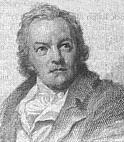

William Blake (1757-1827)Poeta, pintor e ilustrador inglês. Bem a frente de seu tempo, William Blake viveu toda a sua vida à beira da pobreza e morreu sem ter o devido reconhecimento. Quando criança, Blake desejava ser um pintor. Ele estudou desenho e aos 14 anos foi aprendiz do ilustrador James Basire. Blake começou a escrever poesias aos 12 anos e desenvolveu o hábito de ilustrá-las. Desenvolveu um método chamado "illuminated printing" (impressão iluminada) onde utilizava uma mesma matriz de cobre para desenhar e imprimir o texto de seus poemas. Blake casou-se aos 25 anos com Catherine Boucher. Ele a ensinou a ler e a escrever e a ajudá-lo em seu trabalho. Juntos trabalharam e produziram uma edição dos poemas de Blake, chamados de Cantos da Inocência (Songs of Innocence) (1789), utilizando o processo de impressão iluminada. Catherine imprimia, coloria as figuras e encadernava os volumes. Mais tarde, publicou Cantos de Experiência (Songs of Experience) (1794). Nos dois trabalhos contrapõe a beleza da natureza à feiura do materialismo. Os livros vendiam pouco, e eram muito baratos. Os temas das ilustrações de Blake consistiam geralmente de temas religiosos, como nas ilustrações de John Milton, seu poeta favorito (embora rejeitasse seu puritanismo) e ilustrações da Bíblia (21 gravuras do livro de Jó). Embora religioso, Blake rejeitava a moral da época e a igreja institucionalizada. Acreditava na santidade da liberdade sexual, que via como um caminho para a beleza e a inocência. Entusiasta da Revolução Francesa, foi um grande crítico dos males causados pela Revolução Industrial. Blake fez muitas ilustrações para outros artistas que ficaram com os créditos e lucros. Ele morreu pobre e admirado por poucos em 1827 deixando incompleto um ciclo de gravuras que ilustrariam a Divina Comédia de Dante. Fontes: [Encarta 97], [Larousse 98], WebMuseum: Blake, William, Carol Gerten's Fine Art: Blake.
|